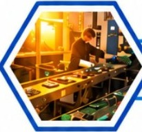

Impactos do descarte incorreto e soluções de reciclagem.
Da gaveta esquecida à reciclagem consciente · Gabriel Vasconcelos e Fernanda Corsi

Um e-book didático que conta, de um jeito leve, para onde vai a tecnologia quando a gente para de usar. O ponto de partida é simples: lixo eletrônico não é lixo qualquer. Um celular, um carregador ou uma geladeira guardam metais valiosos, como cobre e ouro, e também substâncias que fazem mal à saúde e ao ambiente quando o aparelho é queimado, quebrado ou jogado no lugar errado.
Por isso o livro trata o assunto como uma questão de consumo, de informação e de responsabilidade compartilhada, e não só de limpeza. Segundo o Global E-waste Monitor 2024, o mundo gerou 62 milhões de toneladas em 2022 e só 22,3% foram documentados como coletados e reciclados de forma adequada. No Brasil, a lei prevê um caminho certo para o descarte, a logística reversa, mas pouca gente conhece.